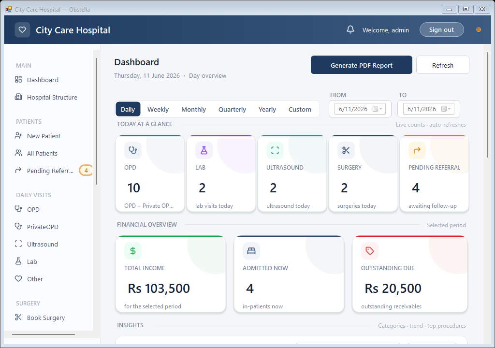
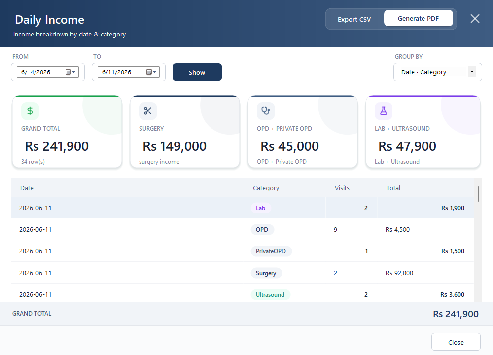

Keep the front desk moving
Register patients, choose a visit type and assign a doctor. Fees fill automatically, and queue tokens are ready to print.
OPD · LAB · ULTRASOUNDBUILT FOR HOSPITALS & CLINICS
Bring your front desk, patient records and billing together. One hospital management app that keeps the day moving—even without internet.
For Windows · Works offline · No subscription

01 / WHY OBSTELLA
Less switching between registers, spreadsheets and receipts. Give each part of your hospital the information it needs, in one connected workflow.
Register patients, choose a visit type and assign a doctor. Fees fill automatically, and queue tokens are ready to print.
OPD · LAB · ULTRASOUNDConnect procedures, packages and rooms to a patient record. See available beds and release rooms when patients leave.
ADMISSIONS · ROOMS · DISCHARGEReview hospital income and unpaid balances. Move from a report to the patient record when it is time to follow up.
BILLING · REPORTING · COLLECTIONS02 / INSIDE THE PRODUCT
Take a closer look at the tools your team will use. These are actual screens from Obstella v1.0.1.
See income by date, category or doctor. Review daily totals or a longer period, then export a report for your records.

Queue tokens, A5 discharge receipts and PDF reports.
Your doctors, fees, procedures, test catalogue and packages.
Pending tests, scans and surgery referrals stay on the worklist.
03 / THE PATIENT JOURNEY
From the first visit to the last payment, each step builds on the same patient record.
Create the patient record and print a queue token.
Record a consultation, lab test or ultrasound.
Assign the procedure, package and room.
Calculate the final bill and print the receipt.
Follow up on any balance from the dues worklist.
DESIGNED FOR YOUR HOSPITAL
Obstella runs locally on your Windows computer. Registration, billing and reports keep working when the connection goes down.
See system requirementsPatient records stay on your hospital PC. No internet connection is needed for daily work.
Automatic monthly backups to up to three destinations, with integrity checks and one-click restore.
A Windows desktop app with password-protected access. No server to administer.
04 / BEFORE YOU GET STARTED
Have a question about your hospital’s setup?
Talk to us directly.
A Windows PC with Windows 7 SP1 through Windows 11. The app uses .NET Framework 4.8 and an embedded SQLite database. A PC with 4 GB of RAM is sufficient. The installer is included.
No. Daily hospital operations work offline, and the database is stored on the hospital PC. An optional cloud backup destination such as OneDrive requires its own connection to sync.
Obstella has no subscription. Contact us for pricing, a demonstration and installation details for your hospital.
Access is password-protected, with account lockout after five failed attempts and recovery by security question or recovery key. Monthly backups support up to three destinations, including local drives, USB or a network location, with integrity checks and 30-copy retention.
The current application runs on a hospital PC. Multi-PC sync and separate receptionist, accountant and admin roles are on the roadmap; they are not included in the current release. Ask us about your setup before purchasing.
Print queue tokens and A5 discharge receipts. Export income reports as PDF or CSV, and patient records as CSV.
PRODUCT UPDATES
See what is available today and what is being considered for future releases.
Patient registration, five visit types, surgery admissions, discharge billing, executive reports, room occupancy, referrals, printing, secure login and backups.
Request the installerThese features are not part of the current release. Plans may change.
Partial dues payments, doctor commission reports and expanded print templates.
Multi-user roles, SMS appointment reminders and expense tracking.
Multi-PC sync, a mobile companion app and multi-language support, including Urdu.
LET’S TALK
Walk through the product with us. Discuss your workflow, ask about pricing and get help with installation.
Request a demo on WhatsAppMon–Sat, 9am–9pm Pakistan time